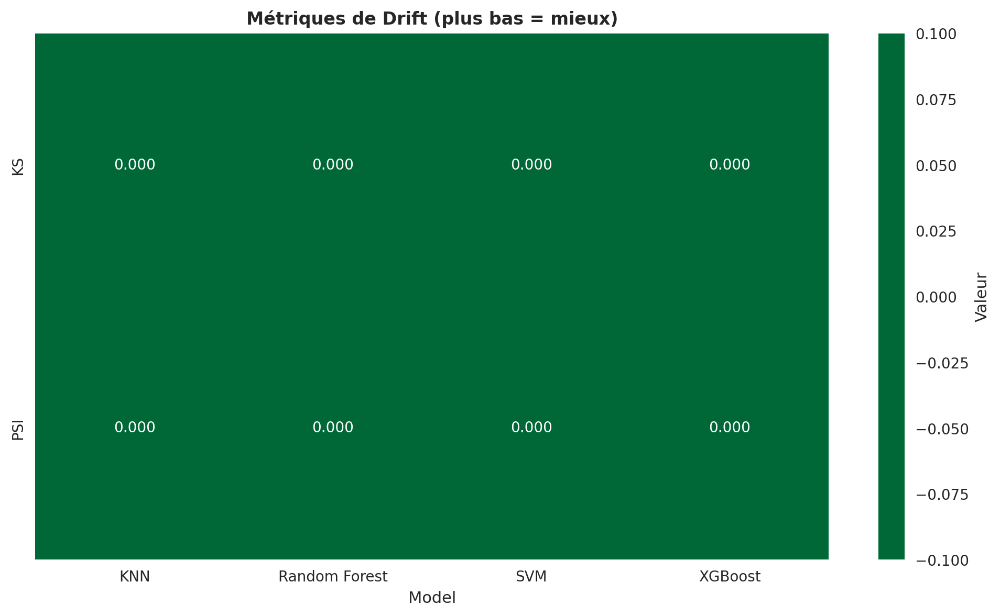

📊 Rapport de Robustesse et Équité des Modèles IA
Date: 10/12/2025 19:32
Modèles analysés: XGBoost, Random Forest, SVM, KNN
Tests effectués: Drift, Stress, Fairness, Personas
📋 Données brutes des tests
| Model | Test | Accuracy | AUC | F1 | KS | PSI | Disparate_Impact | Statistical_Parity_Diff | Equal_Opportunity_Diff | Passed |
|---|---|---|---|---|---|---|---|---|---|---|
| KNN | Drift | NaN | NaN | NaN | NaN | NaN | NaN | NaN | NaN | True |
| Random Forest | Drift | NaN | NaN | NaN | NaN | NaN | NaN | NaN | NaN | True |
| SVM | Drift | NaN | NaN | NaN | NaN | NaN | NaN | NaN | NaN | True |
| XGBoost | Drift | NaN | NaN | NaN | NaN | NaN | NaN | NaN | NaN | True |
| KNN | Fairness | NaN | NaN | NaN | NaN | NaN | NaN | NaN | NaN | True |
| Random Forest | Fairness | NaN | NaN | NaN | NaN | NaN | NaN | NaN | NaN | True |
| SVM | Fairness | NaN | NaN | NaN | NaN | NaN | NaN | NaN | NaN | True |
| XGBoost | Fairness | NaN | NaN | NaN | NaN | NaN | NaN | NaN | NaN | True |
| KNN | Personas | NaN | NaN | NaN | NaN | NaN | NaN | NaN | NaN | True |
| Random Forest | Personas | NaN | NaN | NaN | NaN | NaN | NaN | NaN | NaN | True |
| SVM | Personas | NaN | NaN | NaN | NaN | NaN | NaN | NaN | NaN | True |
| XGBoost | Personas | NaN | NaN | NaN | NaN | NaN | NaN | NaN | NaN | True |
| KNN | Stress | NaN | NaN | NaN | NaN | NaN | NaN | NaN | NaN | True |
| Random Forest | Stress | NaN | NaN | NaN | NaN | NaN | NaN | NaN | NaN | True |
| SVM | Stress | NaN | NaN | NaN | NaN | NaN | NaN | NaN | NaN | True |
| XGBoost | Stress | NaN | NaN | NaN | NaN | NaN | NaN | NaN | NaN | True |
📈 Visualisations
📊 Performance globale (Accuracy)
Graphique non disponible
🎯 Score AUC
Graphique non disponible
⚠️ Détection de Drift (KS + PSI)
⚖️ Équité (Fairness)
✅ Récapitulatif PASS/FAIL

📊 Score F1
Graphique non disponible
📝 Résumé des résultats
| Modèle | Tests PASS | Tests FAIL | Taux de réussite |
|---|---|---|---|
| KNN | 4 | 0 | 100.0% |
| Random Forest | 4 | 0 | 100.0% |
| SVM | 4 | 0 | 100.0% |
| XGBoost | 4 | 0 | 100.0% |
⚠️ Notes techniques
Fichiers générés: 3 fichiers PNG
Statut Kaleido: Disponible
Données chargées: 16 enregistrements de tests